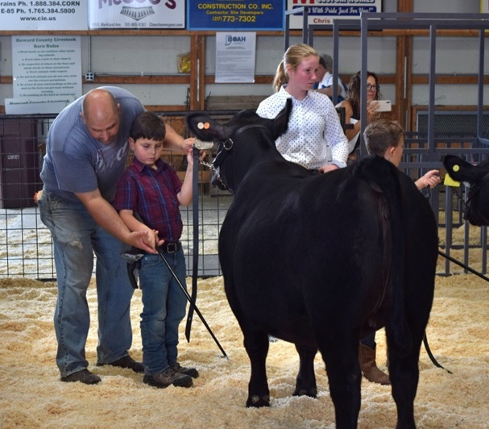

Joe Russeau

Welcome to my personal webpage!
Google
Hi my name is Joe Russeau (pronounced: Roo-so). I'm an undergraqduate student studying biological/physical sciences at IUK. When I graduate I plan to continue in my current field of work, which is analyzing chemical residues on printed circuit boards. I am married to my
lovely wife Andrea and I have four children. We own a small Angus cattle farm and I enjoy spending time with my family and working the farm.
Contact
Email: jrusseau@iu.edu
Education
B.S., Indiana University Kokomo, 8/1990 - 5/2024
- Biological/Physical Science
Skills
I'm interested in learning new concepts related to science, particularly in the fields of Chemistry and Biology.
I enjoy studying cattle genetics and using modern advancements in breeding and embryo transfer to improve our cattle herd
I enjoy heavy weight training and powerlfiting sports
Most importantly I enjoy spending time in prayer and giving thanks to God for each day of life, for His Son, Jesus and the great many blessings and challenges that are given me.
Experience
LEGO Programming
I've programmed EV3 robot to use various sensors and to follow a pathway.
Professional
Currently I maintain leadership positions within the Electronics Industry consortia group known as IPC.
I am vice chair for the 5-32 Cleanliness Assessment Subcommittee.
I am the chair for the 7-11 Test Methods Subcommittee.
I have earned several awards for leadership within IPC.